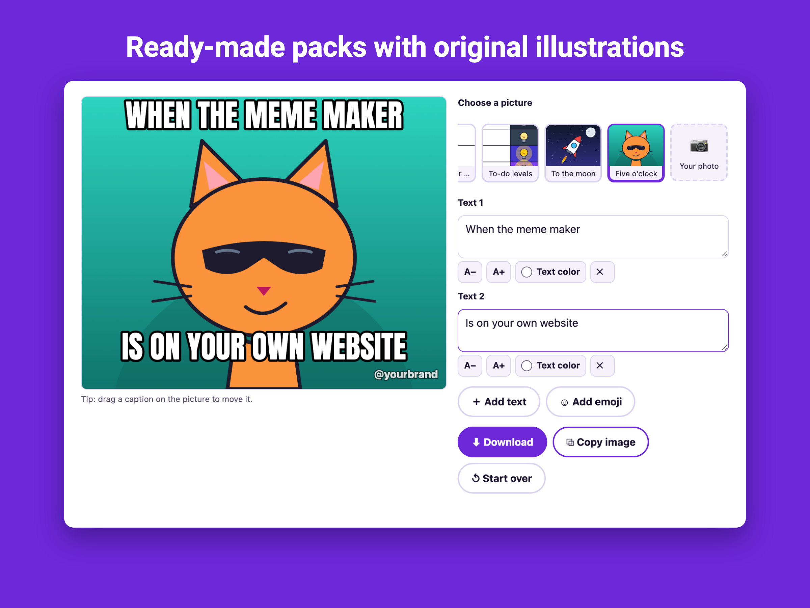
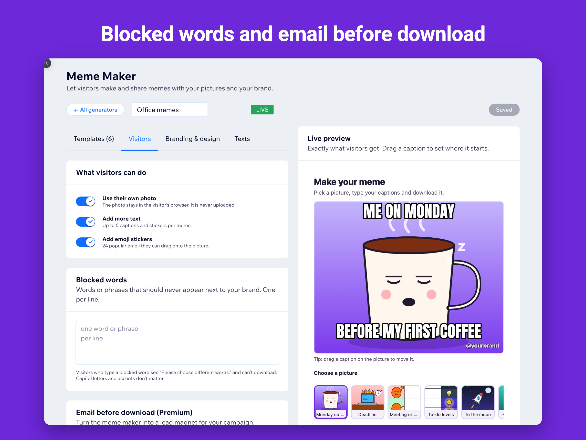

Branded memes: user-generated content for your campaign
A meme your fans make and share is an ad you did not have to write. A branded meme generator gives them your pictures, your fonts and your name on every image.
Who uses it
- Brands and shops running social campaigns with a mascot or product photos.
- Radio stations, podcasts and streamers giving their audience inside jokes to play with.
- Sports clubs and esports teams on match days.
- Cafés, gyms and local businesses who want light-hearted content that brings visitors back.
- Teachers and youth clubs: memes are made in the browser and nothing is uploaded.

Keep it on brand
Add your watermark or logo to every image, choose which pictures people can use, and set a list of blocked words. Visitors who type them are asked to choose different words before they can download.
Turn fun into leads
With Premium, ask for an email before the first download or share. Each address goes to the Leads tab and to your Wix contacts, with an optional consent checkbox. Export everything to CSV.

Questions
Are the pictures free to use?
Yes. The built-in templates are original illustrations drawn for the app. You can also add your own images from your Wix media library; use pictures you own, because classic meme photos are usually copyrighted.
Are visitors' photos uploaded?
No. Memes are drawn in the visitor's browser. Captions and photos never leave the device unless the visitor downloads or shares the finished image.
See it in the Wix App Market